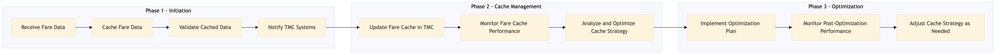

Process for managing fare filing and fare cache within the OTA and TMC systems to ensure accurate and timely pricing information is available for travelers.
| Trigger | New flight data availability or changes in existing fares |
| Outcome | Accurate and up-to-date fare information is cached and made available across all relevant systems, ensuring seamless booking experiences for users. |
| Systems | Expedia Open World Partner Central Amadeus NDC Sabre GDS Travelport EVC One Key TravelAds AWS SageMaker Snowflake Kafka Salesforce Tableau Concur T2 Concur Expense Amex GBT Neo/Complete S/4HANA |

Click to enlarge
| Step | Name & Pain Point | Role | System | Input | Output | KPI | Flags |
|---|---|---|---|---|---|---|---|
| 1.1 | Receive Fare Data Handling large volumes of data efficiently | OTA Supplier | Expedia Open World, Partner Central, Amadeus NDC, Sabre GDS, Travelport, EVC, One Key, TravelAds | New or updated fare data from airlines and transport providers | Fare data processed and validated | Data ingestion time < 5 minutes | ⚠ Exception |
| 1.2 | Cache Fare Data Ensuring data consistency across multiple caches | OTA System | AWS SageMaker, Snowflake, Kafka | Processed fare data | Fare data cached in real-time | Cache update frequency > 10 times per minute | ⚠ Exception |
| 1.3 | Validate Cached Data Identifying and correcting discrepancies in cached data | OTA System | AWS SageMaker, Snowflake | Cached fare data | Validated and error-free fare data | Data validation accuracy > 99% | ◆ Decision⚠ Exception |
| 1.4 | Notify TMC Systems Ensuring reliable communication between OTA and TMC systems | OTA System | Kafka, Salesforce | Validated fare data | Notification sent to TMC systems | Notification delivery time < 1 minute | ⚠ Exception |
| 1.5 | Update Fare Cache in TMC Handling high transaction volumes and ensuring data integrity | TMC System | Concur T2, Concur Expense, Amex GBT Neo/Complete, S/4HANA | Notification with fare data | Updated fare cache in TMC systems | Cache update frequency > 5 times per minute | ⚠ Exception |
| 1.6 | Monitor Fare Cache Performance Optimizing cache performance to reduce latency | OTA System | Tableau, AWS SageMaker | Fare cache performance metrics | Performance report and alerts for anomalies | Cache hit rate > 95% | ◆ Decision⚠ Exception |
| 1.7 | Analyze and Optimize Cache Strategy Balancing between cost and performance | OTA System | AWS SageMaker, Snowflake | Performance report and alerts | Optimized cache strategy and implementation plan | Cache optimization impact > 10% | ◆ Decision |
| 1.8 | Implement Optimization Plan Executing changes without disrupting service | OTA System | AWS SageMaker, Snowflake, Kafka | Optimized cache strategy | Updated fare cache implementation | Implementation completion time < 24 hours | ⚠ Exception |
| 1.9 | Monitor Post-Optimization Performance Continuous monitoring to ensure ongoing optimization | OTA System | Tableau, AWS SageMaker | Post-optimization performance metrics | Performance report and alerts for anomalies | Cache hit rate > 97% | ◆ Decision |
| 1.10 | Adjust Cache Strategy as Needed Adapting to changing data patterns and user behavior | OTA System | AWS SageMaker, Snowflake | Performance report and alerts | Adjusted cache strategy and implementation plan | Cache optimization impact > 5% | ◆ Decision |